Evaulating Uplift Models
INTRO
%matplotlib inline
%config InlineBackend.figure_format = 'retina'
from src.utils import *
def generate_data(N=5000, seed=1, true_te=False):
np.random.seed(seed)
# Control 1: subscriber
x1 = np.random.binomial(1, 0.4, N)
# Control 2: age
x2 = np.round(np.random.uniform(20, 60, N), 2)
# Control 3: past sales
effect_x1 = 0.2
x3_ = -1.45 + (100/x2) - np.maximum((x2-60)**2/500, 0) + effect_x1*x1
x3 = np.maximum(np.random.normal(x3_, 0.01), 0)
# Treatment: mail
w = np.random.binomial(1, 0.2 + 0.6*(1-x1))
# Treatment effect
tau = -0.05*(x2<30) + 0.08*(x2>45)
# Null potential outcome: sales
y0 = np.maximum(np.random.normal(x3_, 0.05, N), 0)
# Generate the dataframe
df = pd.DataFrame({'new': x1, 'age': x2, 'sales_old': x3, 'mail': w, 'sales': y0 + w*tau})
# Add truth
if true_te:
df['sales1'] = np.maximum(y0 + tau, 0)
df['sales0'] = np.maximum(y0, 0)
df['effect'] = tau
df['mu1'] = np.maximum(x3_ - effect_x1*x1 + tau, 0)
df['mu0'] = np.maximum(x3_ - effect_x1*x1, 0)
return round(df, 3)
flowchart TD
classDef included fill:#DCDCDC,stroke:#000000,stroke-width:3px;
classDef excluded fill:#ffffff,stroke:#000000,stroke-width:3px;
classDef unobserved fill:#ffffff,stroke:#000000,stroke-width:3px,stroke-dasharray: 5 5;
D((education))
Z((ability))
Y((wage))
X1((age))
X2((gender))
D --> Y
Z --> D
Z --> Y
X1 --> Y
X2 --> Y
class D,Y included;
class X1,X2 excluded;
class Z unobserved;
linkStyle 0 stroke:#2db88b,stroke-width:6px;
linkStyle 1,2 stroke:#ff6e54,stroke-width:6px;
linkStyle 3,4 stroke:#003f5c,stroke-width:6px;
df = generate_data()
Y = 'sales'
W = 'mail'
Z = 'new'
X = ['age', 'sales_old', 'new']
from sklearn.base import clone
from sklearn.ensemble import RandomForestRegressor
from sklearn.linear_model import LogisticRegressionCV
model_y = RandomForestRegressor(max_depth=2)
model_e = LogisticRegressionCV()
model_tau = RandomForestRegressor(max_depth=2)
from src.learners_utils import *
from econml.metalearners import SLearner
S_learner = SLearner(overall_model=model_y).fit(df[Y], df[W], X=df[X])
S_learner.predict_mu = types.MethodType(S_learner_predict_mu, S_learner)
from econml.metalearners import TLearner
T_learner = TLearner(models=clone(model_y)).fit(df[Y], df[W], X=df[X])
T_learner.predict_mu = types.MethodType(T_learner_predict_mu, T_learner)
from econml.metalearners import XLearner
X_learner = XLearner(models=model_y, propensity_model=model_e, cate_models=model_tau).fit(df[Y], df[W], X=df[X])
X_learner.predict_mu = types.MethodType(X_learner_predict_mu, X_learner)
from econml.dml import NonParamDML
R_learner = NonParamDML(model_y=model_y, model_t=model_e, model_final=model_tau, discrete_treatment=True
).fit(df[Y], df[W], X=df[X])
R_learner.predict_mu = types.MethodType(R_learner_predict_mu, R_learner)
from econml.dr import DRLearner
DR_learner = DRLearner(model_regression=model_y, model_propensity=model_e, model_final=model_tau
).fit(df[Y], df[W], X=df[X])
DR_learner.predict_mu = types.MethodType(DR_learner_predict_mu, DR_learner)
names = ['SL', 'TL', 'XL', 'RL', 'DRL']
learners = [S_learner, T_learner, X_learner, R_learner, DR_learner]
def compare_methods(learners, names, loss, title=None, subtitle='lower is better'):
results = pd.DataFrame({
'learner': names,
'loss': [loss(learner) for learner in learners]
})
fig, ax = plt.subplots(1, 1, figsize=(6, 4))
sns.barplot(data=results, x="learner", y='loss').set(ylabel='')
plt.suptitle(title, y=1.02)
plt.title(subtitle, fontsize=12, fontweight=None, y=0.94)
return results
Oracle Losses
MSE Loss
def loss_oracle_mse(learner):
data = generate_data(N=10_000, seed=123, true_te=True)
tau = learner.effect(data[X])
return np.mean((tau - data['effect'])**2)
compare_methods(learners, names, loss_oracle_mse, title='Oracle MSE Loss')
| learner | loss | |
|---|---|---|
| 0 | SL | 0.003013 |
| 1 | TL | 0.006453 |
| 2 | XL | 0.000762 |
| 3 | RL | 0.000412 |
| 4 | DRL | 0.000394 |
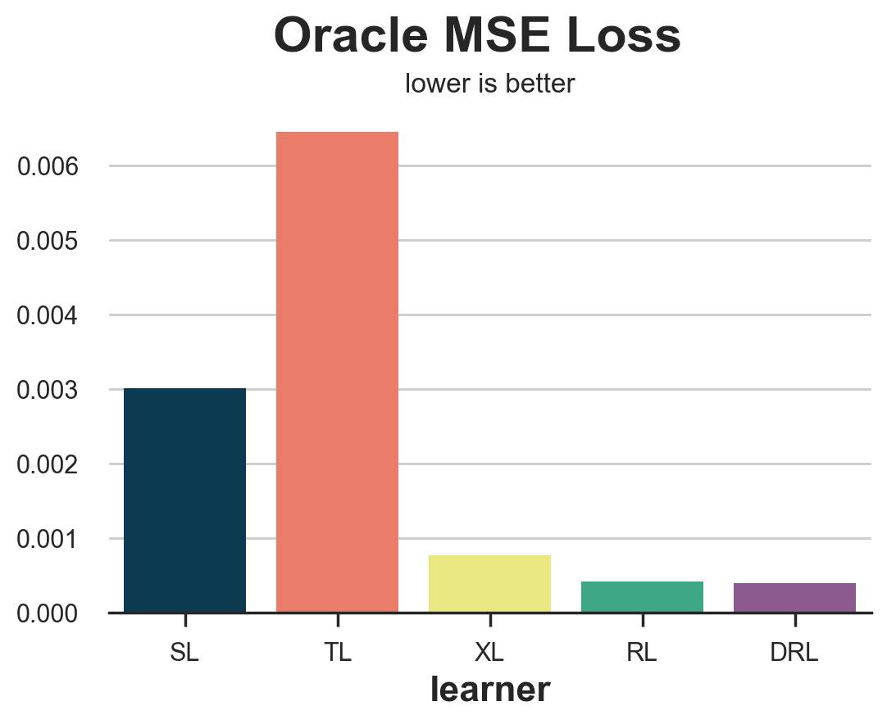
Policy Loss
def loss_oracle_policy(learner):
data = generate_data(N=10_000, seed=123, true_te=True)
tau = learner.effect(data[X])
return np.sum(data['mu1'] * (tau>0) + data['mu0'] * (tau<=0))
compare_methods(learners, names, loss_oracle_policy, title='Oracle Policy Loss', subtitle='higher is better')
| learner | loss | |
|---|---|---|
| 0 | SL | 2297.91 |
| 1 | TL | 2401.51 |
| 2 | XL | 2594.30 |
| 3 | RL | 2596.55 |
| 4 | DRL | 2596.55 |
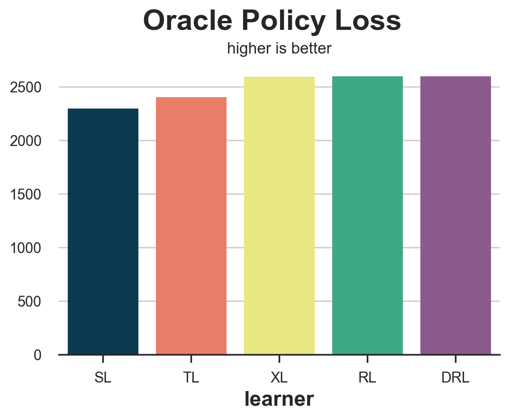
Outcome Loss
def loss_outcome(learner):
data = generate_data(N=10_000, seed=123)
mu0, mu1 = learner.predict_mu(data, X, W, Y)
mu = mu0 * (1-data[W]) + mu1 * data[W]
return np.mean((mu - data['sales'])**2)
compare_methods(learners, names, loss_outcome, title='Outcome Loss')
| learner | loss | |
|---|---|---|
| 0 | SL | 0.004362 |
| 1 | TL | 0.004492 |
| 2 | XL | 0.004473 |
| 3 | RL | 0.003690 |
| 4 | DRL | 0.003729 |
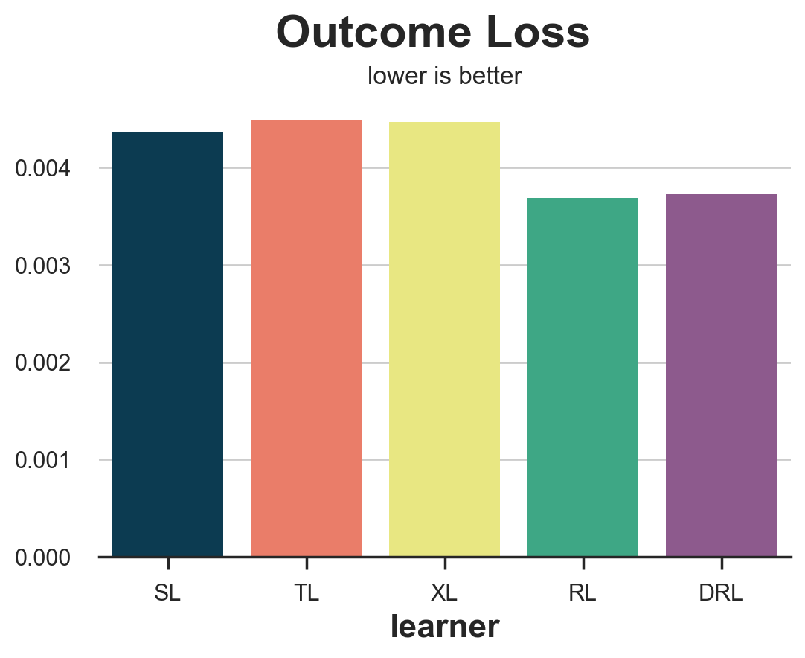
Distribution Loss
def loss_dist(learner):
data = generate_data(N=10_000, seed=123)
tau = learner.effect(data[X])
y0 = data.loc[data.mail==1, 'sales'] - tau[data.mail==1]
return sp.stats.energy_distance(df.loc[df.mail==0, 'sales'], y0)
compare_methods(learners, names, loss_dist, 'Distribution Loss')
| learner | loss | |
|---|---|---|
| 0 | SL | 0.194061 |
| 1 | TL | 0.257276 |
| 2 | XL | 0.234633 |
| 3 | RL | 0.262204 |
| 4 | DRL | 0.249281 |
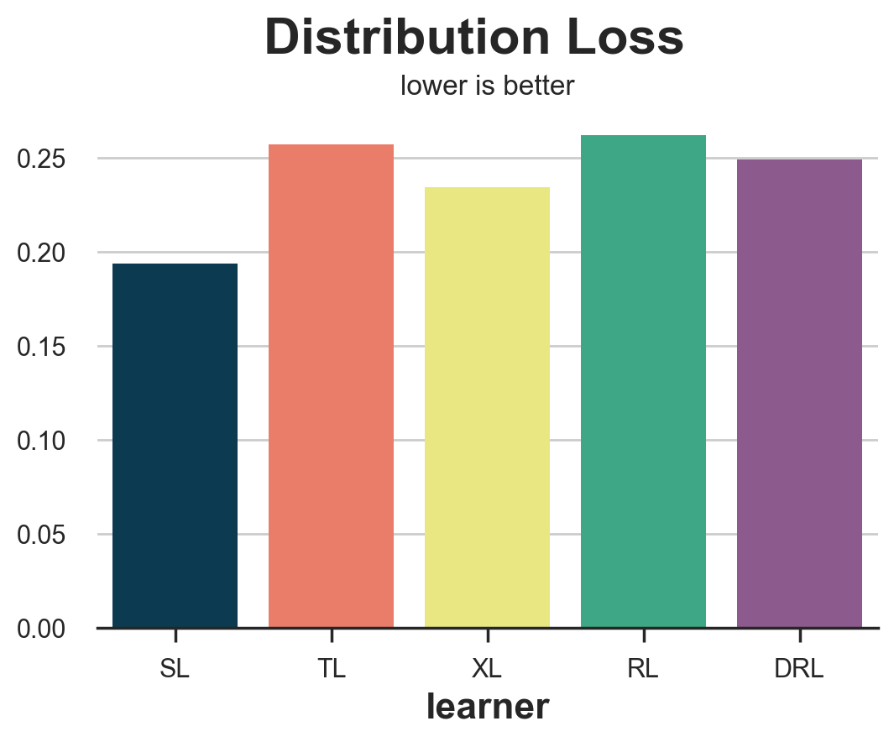
from statsmodels.formula.api import ols
def loss_ab(learner):
data = generate_data(N=10_000, seed=123)
tau = learner.effect(data[X]) + np.random.normal(0, 1e-8, len(data))
data['above_median'] = tau >= np.median(tau)
param = ols('sales ~ mail * above_median', data=data).fit().params[-1]
return param
compare_methods(learners, names, loss_ab, title='Above-below Median Difference', subtitle='higher is better')
| learner | loss | |
|---|---|---|
| 0 | SL | 0.013934 |
| 1 | TL | 0.151279 |
| 2 | XL | 0.106074 |
| 3 | RL | 0.088441 |
| 4 | DRL | 0.088679 |
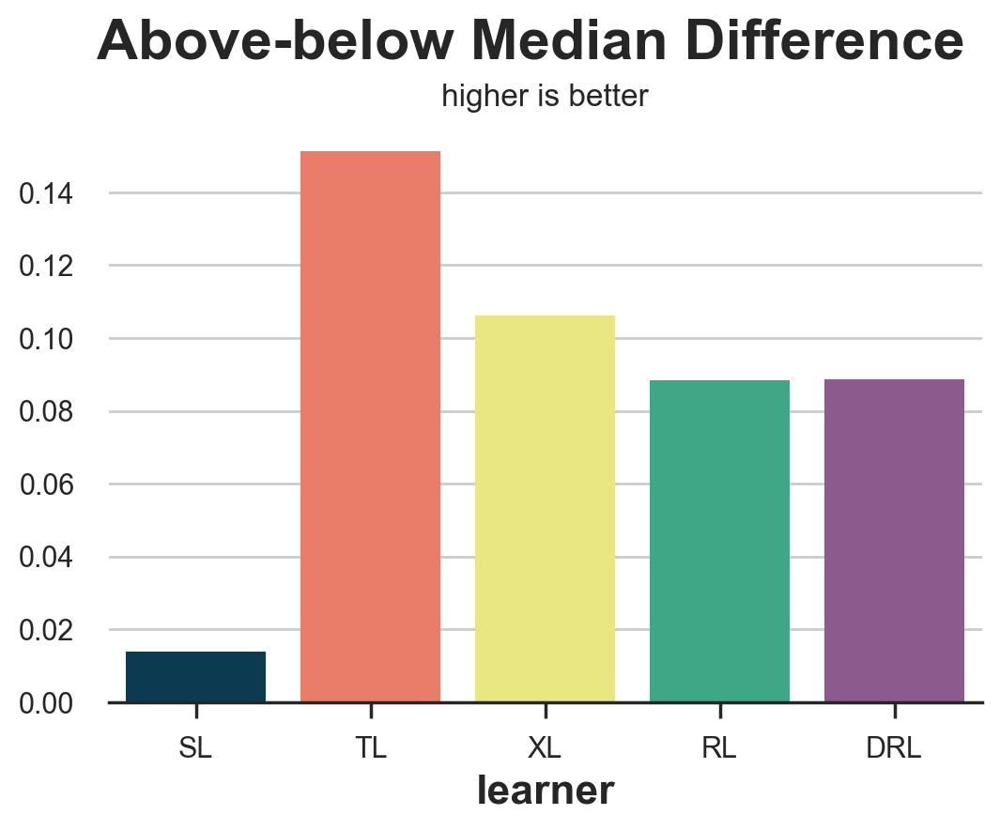
Uplift Curve
Q = 20
df_q = pd.DataFrame()
data = generate_data(N=10_000, seed=123)
ate = np.mean(data[Y][data[W]==1]) - np.mean(data[Y][data[W]==0])
for learner, name in zip(learners, names):
data['tau_hat'] = learner.effect(data[X])
data['q'] = pd.qcut(-data.tau_hat + np.random.normal(0, 1e-8, len(data)), q=Q, labels=False)
for q in range(Q):
temp = data[data.q <= q]
uplift = (np.mean(temp[Y][temp[W]==1]) - np.mean(temp[Y][temp[W]==0])) * q / (Q-1)
df_q = pd.concat([df_q, pd.DataFrame({'q': [q], 'uplift': [uplift], 'learner': [name]})])
fig, ax = plt.subplots(1, 1, figsize=(8, 5))
sns.lineplot(x=range(Q), y=ate*range(Q)/(Q-1), color='k', ls='--', lw=3)
sns.lineplot(x='q', y='uplift', hue='learner', data=df_q);
plt.suptitle('Uplift Curve', y=1.02, fontsize=28, fontweight='bold')
plt.title('higher is better', fontsize=14, fontweight=None, y=0.96)
Text(0.5, 0.96, 'higher is better')
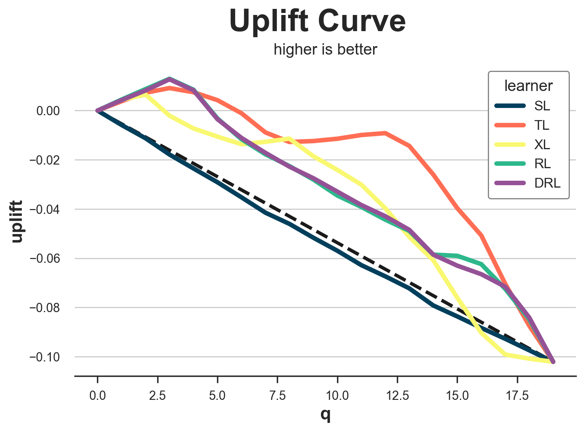
Nearest Neighbor
from scipy.spatial import KDTree
def loss_nn(learner):
data = generate_data(N=10_000, seed=123)
tau_hat = learner.effect(data[X])
nn = KDTree(data.loc[data[W]==0, X].values)
control_index = nn.query(data.loc[data[W]==1, X], k=1)[-1]
tau_nn = data.loc[data[W]==1, Y].values - data.iloc[control_index, :][Y].values
return np.mean((tau_hat[data[W]==1] - tau_nn)**2)
compare_methods(learners, names, loss_nn, title='Nearest Neighbor Loss')
| learner | loss | |
|---|---|---|
| 0 | SL | 0.053964 |
| 1 | TL | 0.051922 |
| 2 | XL | 0.050030 |
| 3 | RL | 0.048385 |
| 4 | DRL | 0.048803 |
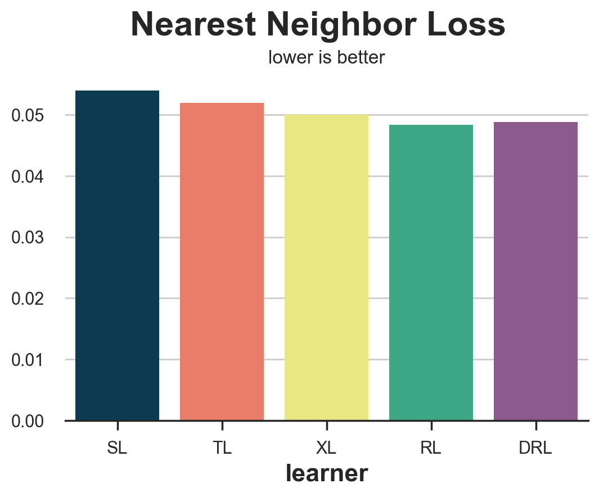
IPW Loss
def loss_ipw(learner):
data = generate_data(N=10_000, seed=123)
tau_hat = learner.effect(data[X])
e_hat = clone(model_e).fit(data[X], data[W]).predict_proba(data[X])[:,1]
tau_gg = data[Y] * (data[W] - e_hat) / (e_hat * (1 - e_hat))
return np.mean((tau_hat - tau_gg)**2)
compare_methods(learners, names, loss_ipw, title='IPW Loss')
| learner | loss | |
|---|---|---|
| 0 | SL | 0.447180 |
| 1 | TL | 0.430504 |
| 2 | XL | 0.443729 |
| 3 | RL | 0.439256 |
| 4 | DRL | 0.440603 |
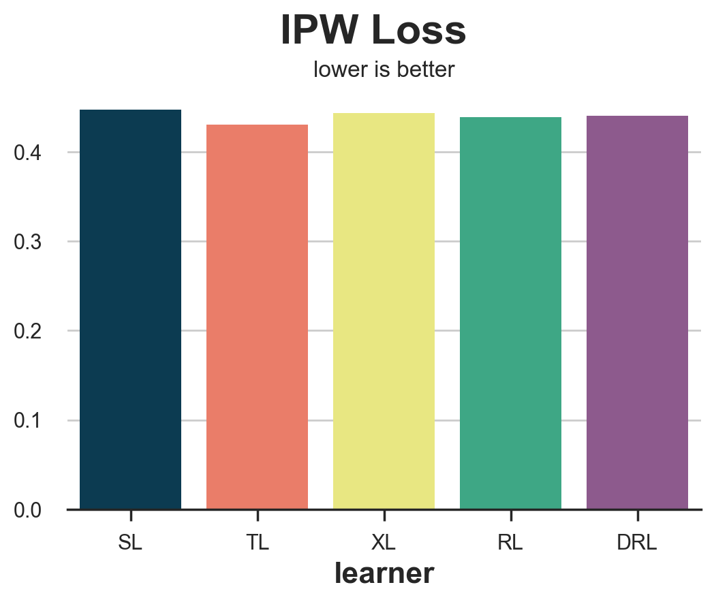
R Loss
def loss_r(learner):
data = generate_data(N=10_000, seed=123)
tau_hat = learner.effect(data[X])
y_hat = clone(model_y).fit(df[X + [W]], df[Y]).predict(data[X + [W]])
e_hat = clone(model_e).fit(df[X], df[W]).predict_proba(data[X])[:,1]
tau_nw = (data[Y] - y_hat) / (data[W] - e_hat)
return np.mean((tau_hat - tau_nw)**2)
results = compare_methods(learners, names, loss_r, title='R Loss')
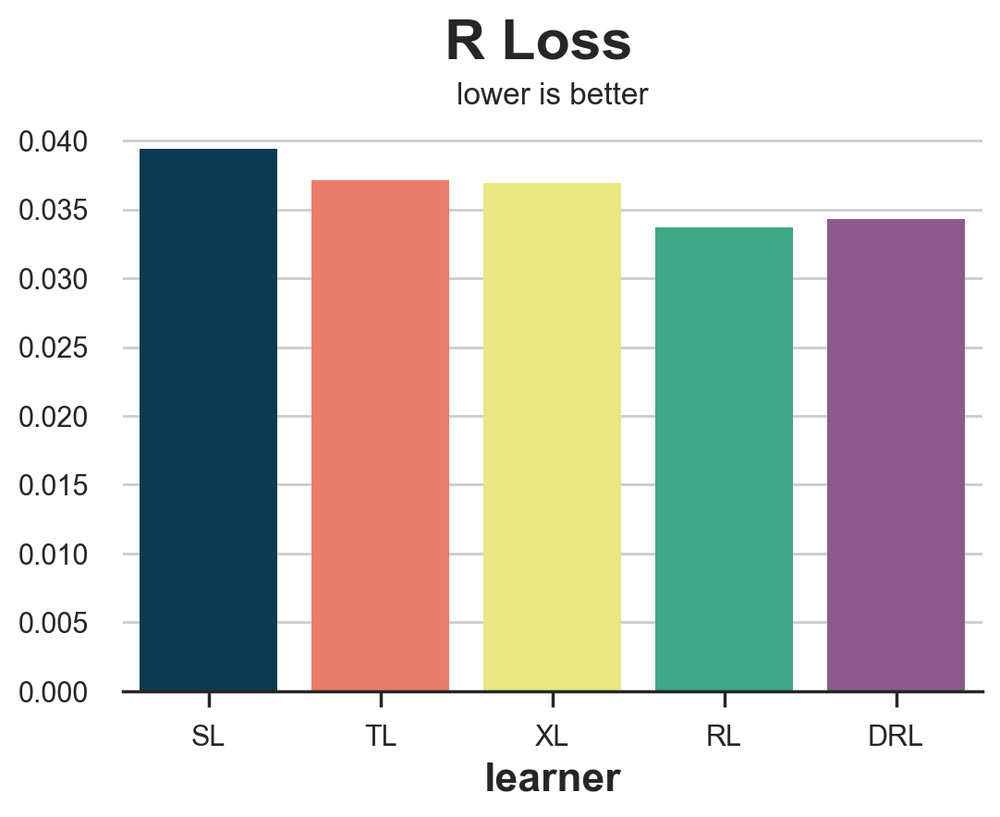
DR Loss
def loss_dr(learner):
data = generate_data(N=10_000, seed=123)
tau_hat = learner.effect(data[X])
y_hat = clone(model_y).fit(df[X + [W]], df[Y]).predict(data[X + [W]])
mu1 = clone(model_y).fit(df[X + [W]], df[Y]).predict(data[X + [W]].assign(mail=1))
mu0 = clone(model_y).fit(df[X + [W]], df[Y]).predict(data[X + [W]].assign(mail=1))
e_hat = clone(model_e).fit(df[X], df[W]).predict_proba(data[X])[:,1]
tau_nw = mu1 - mu0 + (data[Y] - y_hat) * (data[W] - e_hat) / (e_hat * (1 - e_hat))
return np.mean((tau_hat - tau_nw)**2)
results = compare_methods(learners, names, loss_dr, title='DR Loss')
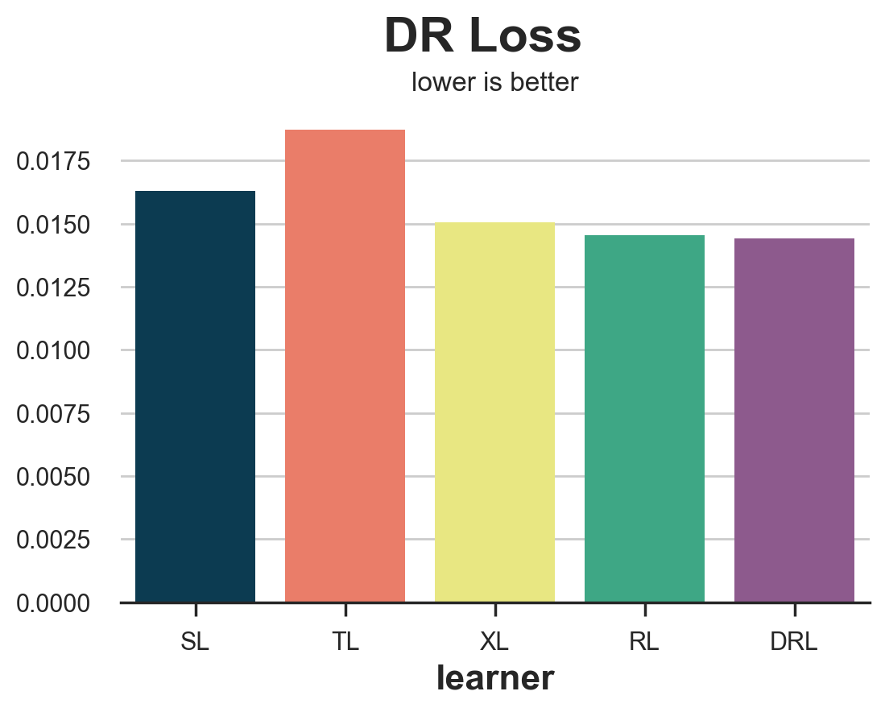
HM 2018
def loss_hm(learner):
data = generate_data(N=10_000, seed=123)
tau_hat = learner.effect(data[X])
e_hat = clone(model_e).fit(data[X], data[W]).predict_proba(data[X])[:,1]
d = tau_hat > 0
return np.sum((d * data[W] / e_hat + (1-d) * (1-data[W]) / (1-e_hat)) * data[Y])
results = compare_methods(learners, names, loss_hm, title='HM Loss', subtitle='higher is better')
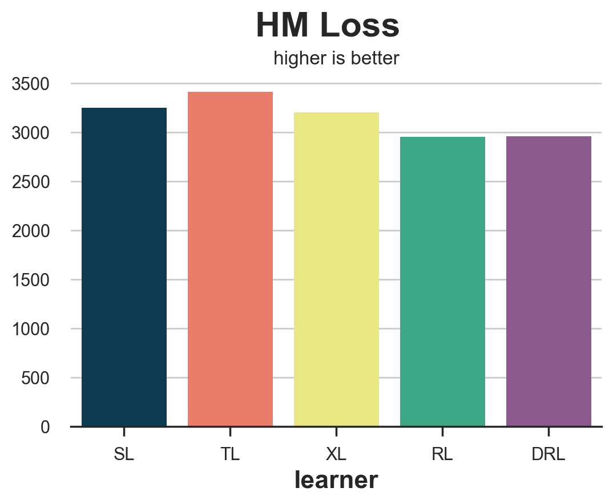
Conclusion
TBD
References
Related Articles
Code
You can find the original Jupyter Notebook here:
https://github.com/matteocourthoud/Blog-Posts/blob/main/notebooks/eval_uplift.ipynb